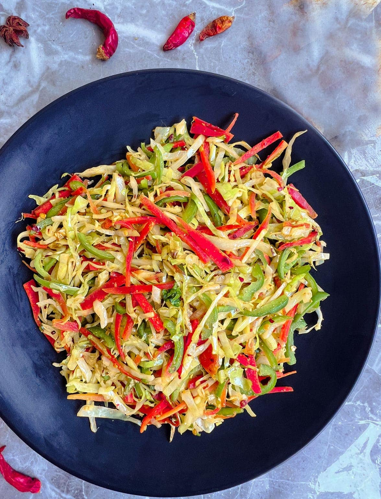

Cabbage
Home

Description
Stir-fried cabbage is a quick side dish that can be eaten with almost anything - from fries to rice.
Ingredients:
- 1 small cabbage
- 1 carrot
- 1 onion
- 1/2 green, yellow and red bell peppers
- 1/2 tsp curry powder
- Salt
Steps:
- Cut the cabbage into thin slices (you can use a potato peeler), slice the onions, bell peppers and grate the carrot.
- Fry the onion in oil until cooked.
- Add the cabbage, carrot, bell peppers, salt and curry powder and stir fry.
- Serve.